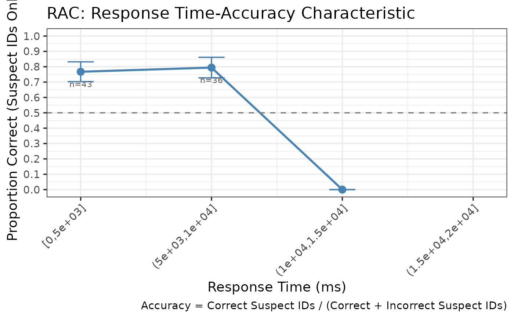

Main function to compute and plot RAC (Response Time-Accuracy Characteristic) for eyewitness lineup data.
Arguments
- data
A dataframe with columns: target_present, identification, response_time
- lineup_size
Integer. Number of people in lineup (default = 6)
- time_bins
Numeric vector of bin edges (recommended for continuous RT data)
- show_plot
Logical. Whether to display the plot (default = TRUE)
- ...
Additional arguments passed to make_rac_gg()
Examples
# Example with binned response times (in milliseconds)
lineup_data <- create_example_lineup_data(n_trials = 200,
include_response_time = TRUE,
seed = 123)
rac_result <- make_rac(lineup_data,
time_bins = c(0, 5000, 10000, 15000, 20000))
print(rac_result)
#>
#> === Lineup RAC Analysis ===
#>
#> Overall Accuracy: 0.775
#> Total Suspect IDs: 80
#> Lineup size: 6
#>
#> RAC Data:
#> # A tibble: 4 × 7
#> response_time mean_time n_correct n_incorrect n_total accuracy se
#> <chr> <dbl> <int> <dbl> <dbl> <dbl> <dbl>
#> 1 [0,5e+03] 3193. 33 10 43 0.767 0.0644
#> 2 (5e+03,1e+04] 6632. 29 7.5 36.5 0.795 0.0669
#> 3 (1e+04,1.5e+04] NaN 0 0.5 0.5 0 0
#> 4 (1.5e+04,2e+04] NaN 0 0 0 NA NA
#>
#> Plot available in $plot
rac_result$plot
#> Warning: Removed 1 row containing missing values or values outside the scale range
#> (`geom_line()`).
#> Warning: Removed 1 row containing missing values or values outside the scale range
#> (`geom_point()`).
#> Warning: Removed 2 rows containing missing values or values outside the scale range
#> (`geom_text()`).
